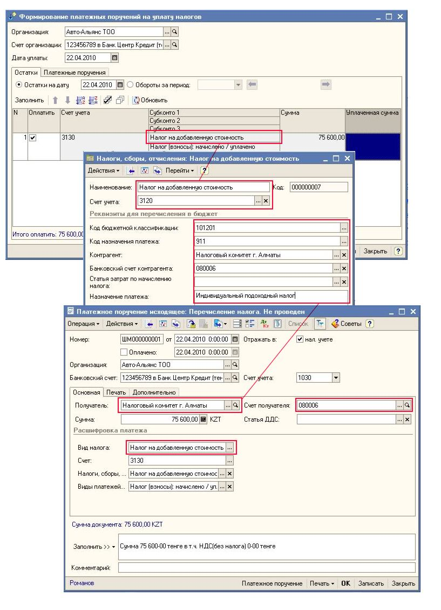
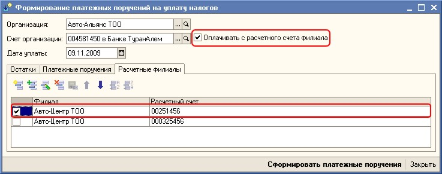

Обработка «Формирование платежных поручений на уплату налогов»
Обработка «Формирование платежных поручений на уплату налогов» позволяет формировать платежные поручения по остатку начисленных сумм налогов.
В обработке необходимо указать:
-
Организацию.
-
Расчетный счет – банковский счет, с которого будет идти перечисление по налогам
-
-
Выбрать режим получения данных:
-
По остатку – необходимо указать дату, на которую будет получаться остаток сумм по начисленным суммам.
-
За период – необходимо выбрать период (месяц, квартал, год) за который было начисление налогов.
Для формирования платежных поручений необходимо нажать на кнопку «Сформировать платежные поручения». Для того чтобы открыть созданный документ, необходимо перейти на закладку «Платежные поручения» и выбрать двойным щелчком мыши нужный документ.
ВАЖНО! Перед формированием платежных поручений нужно обновить данные по остаткам неуплаченных сумм! Для этого в обработке на закладке "Остатки" предназначены кнопки:
-
"Заполнить", которая перезаполняет всю табличную часть "Остатки".
-
"Обновить", которая перезаполняет только колонки "Сумма", "Уплаченная сумма" по отмеченным позициям.
Колонка "Сумма" в табличной части "Остатки" заполняется по остаткам или оборотам за указанный период. Колонка "Уплаченная сумма" собирается из проведенных платежных поручений на дату уплаты по выбранному налогу и организации.
Если в документ «Платежное поручение исходящее» вносились какие-либо изменения, то для того чтобы в обработке они отобразились, необходимо нажать на кнопку «Обновить», которая также находится на закладке «Платежные поручения». Также при нажатии на кнопку "Обновить" табличная часть "Платежные поручения" дополняется строками, в случае если уже имеются в информационной базе непроведенные документы "Платежное поручение исходящее (перечисление налога)" по данной организации, включая и структурные подразделения, по виду налога и получателя на дату уплаты налога. В связи с этим обновляется и информация по уплаченной сумме табличной части "Остатки".
Вновь созданные документы, с помощью обработки, в табличной части «Платежные поручения будут выделять светло-розовым цветом». Проведенные документы в табличной части "Платежные поручения" помечаются картинкой 
Созданные платежные документы в табличной части "Платежные поручения" отображаются по выбранной организации, с учетом структурных подразделений, и по уплачиваемым налогам.
Особенности формирования платежных поручений для организаций, не имеющих филиальную структуру.
В созданных документах «Платежное поручение исходящее»:
-
В качестве организации заполняется организация, указанная в обработке.
-
В качестве счета организации заполняется расчетный счет, указанный в обработке.
-
Такие реквизиты как получатель, счет получателя, КБК, КНП, назначение платежа заполняются из элемента справочника «Налоги, сборы и отчисления» по виду налогу и счету.
В случае если организация имеет филиальную структуру, тогда в качестве организации может выступать как головная организация, так и филиал.
Особенности по уплате налогов для предприятий, имеющих филиальную структуру.
-
В качестве организации заполняется организация, указанная в обработке.
-
В качестве плательщика по налогам (все налоги, кроме КПН, НДС и акциз) является филиал, в качестве плательщика по налогам НДС, КПН и акциз выступает головная организация. В случае, когда анализируются данные только по филиалу, то данные по остаткам неуплаченных сумм по налогам НДС, КПН и акциз не анализируются.
Важно!!! В случае когда структурной единицей выступает подразделение организации, то поле РНН плательщика будет пустое. Необходимо самостоятельно зайти в сформированный документ и заполнить вручную поле "РНН плательщика".
-
Когда в обработке в качестве организации указана головная организация, то при получении данных анализируются также и филиалы. Если расчетный счет для уплаты налогов филиалов используется отличный от расчетного счета головной организации необходимо установить признак «Оплачивать с расчетного счета филиала» и на закладке «Расчетные счета филиалов» выбрать для каждого филиала расчетный счет. В случае если счет будет не указан, то при формировании платежных поручений, в документе он не будет заполнен.

-
КБК, КНП, назначение платежа заполняются из элемента справочника «Налоги, сборы и отчисления» по виду налогу и счету.
-
Если организацией является головная организация:
-
Для всех видов налогов, кроме прочих (счет учета - 3190) получатель берется из ресурса «Налоговый комитет» регистра сведений
«Исчисление налогов структурных единиц» по головной организации и виду налога. В качестве счета получателя заполняется основной расчетный счет получателя, если он тенговый.
-
Если данные в регистре сведений
«Исчисление налогов структурных единиц» по головной организации отсутствуют или анализируются прочие налоги, то получатель заполняется из реквизита "Налоговый комитет" справочника "
Организации". В качестве счета получателя заполняется основной расчетный счет получателя, если он тенговый.
-
Если у организации не заполнен реквизит "Налоговый комитет" , то получатель и счет получателя заполняется из элемента справочника
«Налоги, сборы и отчисления» по данному виду налогу и счету уплаты налога.
- При заполнении получателя в филиале используется следующая схема:
-
Анализируется, есть ли субконто «Контрагенты» на счете уплаты налогов. Если субконто существует, то получатель берется из значения данного субконто. В качестве счета получателя заполняется основной расчетный счет получателя, если он тенговый.
-
Если субконто «Контрагенты» на счете уплаты налога отсутствует, то получателя берем из ресурса «Налоговый комитет» регистра сведений
«Исчисление налогов структурных единиц» по филиалу и виду налога. В качестве счета получателя заполняется основной расчетный счет получателя, если он тенговый.
ИСКЛЮЧЕНИЕ: Для прочих налогов(счет учета 3190), если нет субконто "Контрагенты" на счете, то получатель и счет получателя заполняется из реквизита "Налоговый комитет" справочника "Организации". Если в справочнике не указан "Налоговый комитет" , то получатель и счет получателя заполняется из элемента справочника «Налоги, сборы и отчисления» по данному виду налога и счету уплаты налога.
-
Если данные в регистре сведений
«Исчисление налогов структурных единиц» по филиалу отсутствуют, то получатель заполняется из реквизита "Налоговый комитет" справочника
"Организации". В качестве счета получателя заполняется основной расчетный счет получателя, если он тенговый.
-
-
Если данные в регистре сведений
«Исчисление налогов структурных единиц» по головной организации отсутствуют, то получатель заполняется из реквизита "Налоговый комитет" головной организации. В качестве счета получателя заполняется основной расчетный счет получателя, если он тенговый.
-